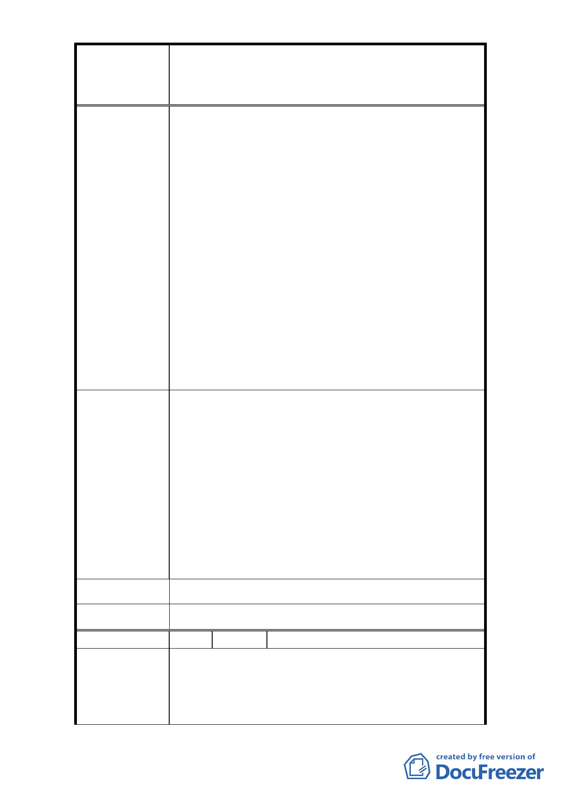

修訂臺北市大安區青田街保存區聚落風貌保存專用區細部計
案
名
畫、變更部分第三種住宅區、第三種商業區(特)為第三種住宅區
(特)(日式宿舍)及第三種商業區(特)(日式宿舍)暨劃定週邊地
區都市設計管制細部計畫案
法上之單方行政行為，具有行政處分之性質，再依
行政程序法第 7 條揭示之「比例原則」，本都市計
畫修正案應以「有多種同樣能達成目的之方法時，
應選擇對人民權益損害最少者」之原則辦理，謹先
敘明。
2. 準此，觀本案計畫範圍中諸多區塊並無日式房屋或
保護樹木，但卻同樣劃入本案都市設計管制範圍，
如附圖所示之 A、B 區塊，對該區塊居民實有不當
之權利限制。
（詳附圖）
3. 由於本區域多為老舊公寓，並未設置地下停車場，
附近居民多繞行窄小巷道四處停放，視覺景觀極為
不當，與設定聚落風貌保存專用區之原意，加上假
日又多有宗教活動，訪客倍增，更形成空氣污染等
環保問題。
1. 建議 比照同區域中 C、D、E 區塊切割方式，將 A、
B 區塊劃出管制範圍。
2. 由於興建地下停車場每車位之平均造價達 250 萬以
上，在無誘因情形下開發廠商不會主動增設停車
建議辦法
位，現停車獎勵辦法受人詬病處無非係因相對獎勵
之樓地板價值過高所致，此部分只要配合當地房價
作適當調整比例即可，實無須全面廢除，因此建議
本區域應率先採用新的停車獎勵辦法，鼓勵建商設
置，將來可將地面停車情形消弭，更有利於當地之
都市景觀。
市 府 回 覆 意 見 同編號 1 回覆意見。
委 員 會 決 議 同編號 1 決議。
編 號 19 陳情人 何穎紅、蘇香蘭、張加成、蔡昭幸
1. (1)本區住三土地建蔽率僅有 45%，與臺北市土地分
區管制住三建蔽率 50%不符。(2)開挖率：本區限制
陳 情 理 由 基地開挖率僅 60%，都更時十分困難，但本區斜對面
基督教長老教會之開挖率幾近 100%。
- 20 -